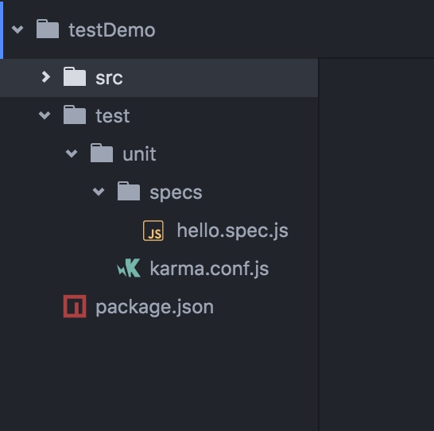

最近往 npm 上发布一些包，为了保证后续运行没有很严重的bug，需要给程序加一些单元测试，看下整体的运行的情况，参照了最近使用的 vue-cli 生成项目的测试部分代码，使用 karma + mocha + phantomjs + chai 完成了整个项目的单元测试工作。
测试组件的介绍
测试组件选取karma为测试管理工具，mocha为测试库，chai为断言库，phantomjs为测试浏览器。
Karma 是一个基于nodejs的JavaScript测试执行过程管理工具（Test Runner）。该工具可用于测试所有主流Web浏览器，也可集成到CI（Continuous integration）工具，也可和其他代码编辑器一起使用。这个测试工具的一个强大特性就是，它可以监控(Watch)文件的变化，然后自行执行，通过console.log显示测试结果。
Mocha 是一个基于nodejs和浏览器集合的各种特性的JavaScript测试库，并且让异步测试变得简单，支持TDD(测试驱动开发)和BDD(行为驱动开发)，在测试中捕获到异常时，会给出灵活准确的报告。
Chai 是一个基于nodejs的断言库，并且完美支持各种主流的JavaScript测试框架。
Phantomjs 是一个无页面的浏览器，由于不需要渲染页面，网页的运行时间会大大缩短，该浏览器适合用于测试。
环境搭建
首先
新建了一个 testDemo 的项目，文件结构大致如下

- src 源码目录,这里没有源码，可以不用管
- package.json 定义文件
- test 测试目录，所有跟测试有关的文件都放在这
- unit 单元测试目录
- karma.conf.js karma 的配置文件
- specs 所有的测试代码存放在这里
安装依赖包
需要安装下面这些包
1 | { |
编写karma.conf.js
1 | module.exports = function(config) { |
- browsers 配置浏览器，这里使用 PlantomJS
- frameworks 使用的测试框架
- reporters 那些报告类型
- files 测试用例文件， 这里是specs文件夹下所有的以 .spect.js 结尾的文件
编写测试用例
mocha的语法和 Jasmine 类似，像下面这样定义测试用例
1 | // 定义一类测试用例 |
然后我们在 package.json 中加上运行脚本
1 | { |
执行命令 npm run test
1 | > test-demo@1.0.0 test /Users/liuyuyang/Documents/code/testDemo |
到这里，测试结束，可以看到我们总共就只有一个单元测试用例，并且通过.
只是介绍了，javascript测试环境的搭建，以及最简单的测试用例的写法，更多的api和单元测试的写法，大家可以参加官网